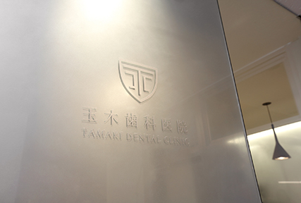
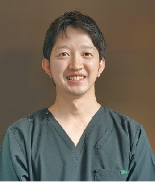

口腔がんとは
口腔がんは口内炎との見分けが難しくサイレントキラーとも言われおり、
舌、歯肉、頬粘膜、口蓋、口腔底、口唇など、口腔を構成する部位に発生するお口の中にできるがんの総称です。
口腔がんは上顎や下顎にできたり、腫瘍が大きい場合は上顎から頬や下顎にまで患部が及ぶこともあります。
発生頻度は全てのがんの約4%を占め、性別頻度は女性よりも男性の方が2倍多く発生しております。
口腔がんの中でも最も多いのは「舌(ぜつ)がん」で、口の中にできるがんの半数以上を占めています。
また「歯肉がん」や「口底がん」も大きな割合を占めています。
口腔がんができる要因として多く挙げられるのが喫煙・飲酒です。
その他、入れ歯が歯肉や頬粘膜に当たる、歯や詰め物が舌に当たるといった慢性的な機械的刺激も口腔がんを引き起こす要因となります。
また熱い飲食物による火傷や口内炎、刺激物が好きという嗜好性も、口腔内の状態によっては口腔がんの要因となるため配慮が必要です。
口腔がんは早期発見のできるガンでもあり、早期発見されることができれば怖くはありません。
当院では通院している患者さまに、幸せな人生を送っていただくためにも、これからも口腔がんの早期発見に努めたいと考えております。
玉木歯科医院だからこそできる口腔がん治療とは

当院では口腔がんを専門とした医師が在籍しております。歯の定期検診にいらっしゃる患者様の口腔内を、がんの有無を含めて診察いたします。
お子さんから高齢の方、体が不自由な方でも安心してお任せいただける体制と院内環境を整えております。
舌(ぜつ)がんなどの口腔がんを疑う人は、内科や耳鼻咽喉科、歯科を受診すると思いますが、口腔内の複雑な構造の中で病変を確認するには、やはり歯科医師の目が優れていると考えます。
本来、咽頭から下の疾患であれば内視鏡が必要になりますが、口腔がんが発症する口腔内は目で見ることができます。
だからこそ、歯科医師である我々の目が内視鏡となるのです。
粘膜を診る時のポイントは、粘膜の色の変化です。口の中の病気を色で分けると、「白」「赤」「黄」「黒」の4色になります。粘膜が白い状態は粘膜上皮の角化が進行しているために、健常な時は2週間ぐらいで剥げ落ちる角化細胞が残っている状態。
つまり、細胞のDNA異常が起きていることを示します。
また、粘膜が赤い状態は血管が増殖している状態。腫瘍は必ず血液を必要とします。したがって粘膜が白い、あるいは赤い場合は、腫瘍性の病変を疑う必要があります。このような粘膜の色の変化があり、1～2週間様子を見ても治らない場合は、「口腔がんではない」と思うのではなく、「もしかして口腔がんかもしれない」と考えることが大切です。がんの初期は、痛みなどの自覚症状が無い場合が多いです。他の臓器のがんであれば、初期の場合は検診で見つかることが多いでしょう。
口腔は小さな容積ですが消化器、感覚器、運動器、呼吸器であるということです。
このような器官は、からだの中でも数少ないです。それだけ患者さんのQOL(Quality Of Life＝生活の質)に直結した臓器であるのです。
さらに、口腔は緻密な動きをしている部位であるため、大きくなった腫瘍を切除した場合は、再建手術を行ったとしてもなかなか機能を元通りにすることは難しくもあります。そのため患者様は社会復帰できても、QOL(Quality Of Life＝生活の質)という点では満足度は低いといえるでしょう。そこで当医院では、低下した口腔機能を少しでも改善できるように、患者様のQOL(Quality Of Life＝生活の質)向上のサポートをさせていただきます。
口腔がん専属医師からのメッセージ

田村直樹 勤務日（月、土）
経歴
- 東京歯科大学歯学部卒業
- 東京歯科大学大学院口腔外科卒業
(歯学博士) - 東京歯科大学千葉病院口腔外科勤務
- 日本口腔外科学会認定医
- 日本歯周病学会会員
初期の口腔がんは鑑別が非常に難しいです。現在の日本では口腔がん患者の半数以上がステージ3、4で見つかっております。
しかし、専門の知識を持った歯科医師であれば、口腔がんを定期検診で見つける事も可能です。
定期検診を受ける事で、病の早期発見、早期治療の実現を目指します。
早い方では30代で発症した例もあるので、幅広い年代の方に定期健診の受診をお勧めしております。
特に50代後半になりましたら、一度お口の検診を受診してみてください。
口腔がんは露出部分にできる事が多いため、外見の変形や手術後の傷跡、摂食嚥下(せっしょくえんげ＝食べ物を認識し、口から胃の中へ送り込む、一連の動作のこと)の障害、などQOL(Quality Of Life＝生活の質)に直結する問題につながります。
お口の中に異常を感じた場合は放置せず、早期発見のため早めの受診をお勧めいたします。
歯科医院を利用する事はQOL(Quality Of Life＝生活の質)向上を目指すということであり、健康な生活を送る上で欠かせないことだといえます。
治療の流れ
Step1
問診票の記入
口腔がんになる要素がどれくらいあるか等、生活習慣についてお聞きします。
Step2
視診・触診
まずは、お口の中に異常がないか？を目で見て確認します。（視診）
さらに、ゴム手袋を付けた指で触って、しこりや盛り上がっているところがないか？を調べます。（触診）
Step3
検診・写真撮影
お口の中の状態を写真撮影します。
Step4
検体採取
必要であれば口腔内の組織を採取（細胞診、組織診）します。
1～2週間程度で診断結果をお渡しできます。
Step5
カウンセリング
検診後、受診者の方に口腔内の状態をわかりやすくご説明します。
尚、異常があった場合は、大学病院等へ紹介を行います。
問題がなくても、継続して最低でも年に1回は口腔がん検診・口腔健診を受けましょう。